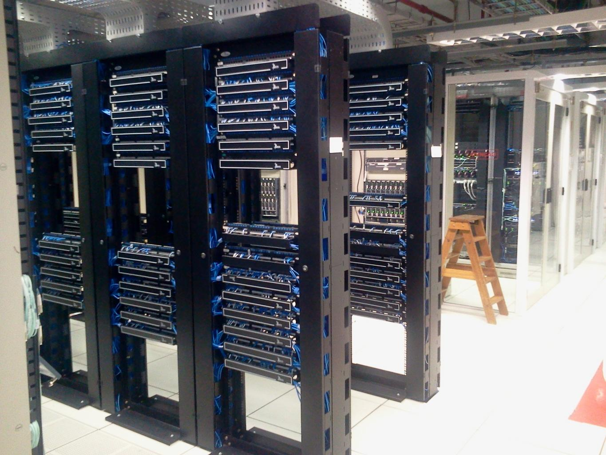
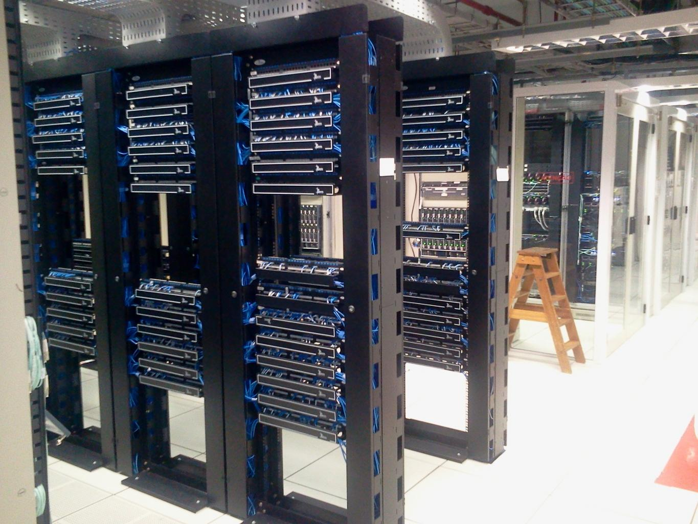
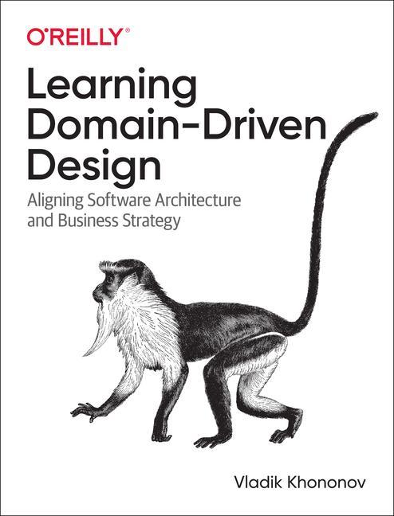
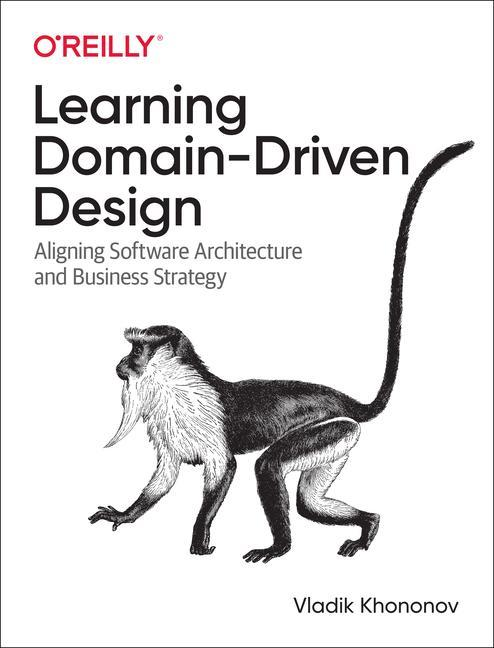

Rysunek zamku. Zamek to może być moduł, aplikacja, jeden lub więcej współpracujących mikroserwisów itp.
Rysunek tego co w zamku najważniejsze (wyrocznia)
Transakcje są wewnątrz zamku co wspoomaga skalowalność, dostępność i odporność na błędy.
If you don’t trust your business partner you won’t share transactions with them."
Jedyna opcja współpracy z zamkiem jest poprzez wysłanie wiadomości.
Interfejs dostępu do zamku powinien być dobrze przemyślany
Dodać informację o "A philosophy of Software Design" Johna Ousterhouta
Przykład: Bankomat (dodać rysunek)
Mozna przesunać do sekcji o współpracy.
Słabo jest opisane, który zamek nadaje protokół komunikacji.
Tutaj DDD (context map) może pomóc. Link do Michael Plod.
Nie chcemy udostpępniać wszystkiego co mamy w zamku.
Rozdział 3
Współpraca
Nie żyjemy w próżni, w celu osiągnienia celu (biznesowego) potrzebujemy współpracować.
Dawniej biznes odbywał się przy pomocy atramentu i papieru (można dodać rysunek długopisu i papieru).
Każdy druk miał swój unikalny number/sugnaturę, która pozwalała na jego identyfikację.
Wymieniamy niezmienne dane (identyfikatory, referencje) oraz komunikaty o zdarzeniach.
Dodać rysunek tego jak tani jest storage obecnie - opowiedziec jaki to mialo wpływ na architekturę
systemów
Dane te są wykorzystywane to wywołania naszego interfejsu zamkowego.
Współpraca to wiadomości wysyłane pomiędzy zamkami w celu wykonania operacji biznesowej.
Kolaboracja jest offline => bardzo ważne.
Współpraca unika transakcji rozproszonych => wpływ na przepustowość, dostępność, skalowalność.
Zamiast tego wysyłamy ciąg wiadomości asynchronicznych.
Wchodzą wyzwania związane z asynchronicznością (zwłaszcza w skomplikowanych procesach biznesowych):
Idempotentność
Obsługa błędów
Kolejność wiadomości
Monitorowanie
Wersjonowanie
Itp.
Dane na zewnątrz zamku są:
Niezmienne
Nie są częścią transakcji
Mają identyfikator
Mogą być wersjonowane (bo jest to obecnie tanie)
Rozdział 4
Wysłannicy
Kim jest wysłannik?
Zamek nie ufa wysłannikowi, ponieważ operuje on poza zamkiem. To użytkownik wysłannika decyduje co
zrobić z danymi oraz authoryzuje
operacje.
Wysłannik ma dane per klient.
Wysłannik może posiadać kopię danych klienta, które są znaczące z punktu widzenia procesu.
Wysłannicy operują na niezmiennych danych referencyjnych. Zdjęcie katalogu produktów apart czy innej
ikea.
Przykład pyszne.pl albo klient do gry, albo doradca kredytowy (zbierał dane od klienta, ale po wyborze
oferty to klient musiał sam złożyć wniosek w banku)
Przykład klienta pocztowego - wiele zamków (serwerów pocztowych), wiele wysłanników (klientów pocztowych
e.g. telefon, przeglądarka, program pocztowy)
Wysłannicy mogą pracować offline. Mogą buforować dane podczas braku łączności co wspiera
asynchroniczność, natomiast musi być obsłużone przez programistę. (zwykły bufor na wiadomości nie
wystarczy)
W przypadku długotrwałych operacji biznesowych (np. proces zakupowy) konieczne jest zapisywanie danych
po obu stronach (zamek i wysłannik).
Wewnątrz zamku operujemy za prowadzenie procesu odpowiedzialne są aktywności (ang. activities), któkt
operują na zasobach (ang. resources) => np. dobra materialne, usługi itp.
Aktywność może być wyzwalana przez:
- wenętrzną wiadomość (np. zdarzenie domenowe)
- zewnętrznla wiadomość (np. zdarzenie procesowe z wysłannika)
- upływ czasu (np. timeout)
Aktywność nie trwa wiecznie. Może być przerwana, wznowiona itp.
Różne:
Przeważnie wewnątrz zamku idziemy w orkiestrację, a poza w choreografię
To jest wzorzec do tworzenia skalowalnych systemów rozproszonych.
Jak autonomia wspiera architekturę (nie tylko mikroserwisową).
"An event is an immutable set of attributes with an identity."
"Realiable systems have alwasy been built out of unreliable components."
"All models are wrong, but some are useful." - George E.P. Box
 



 
